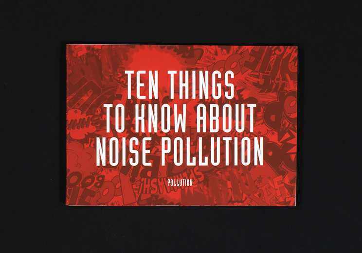
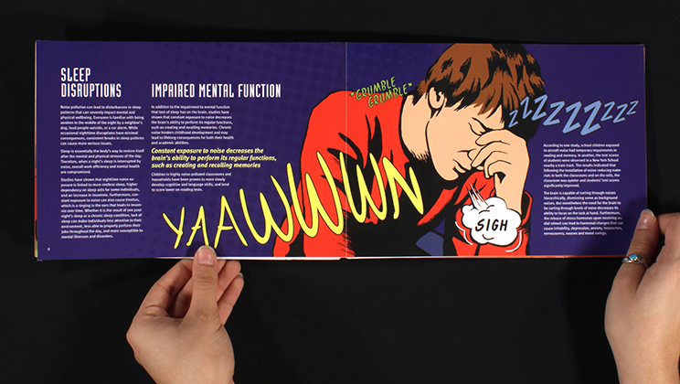
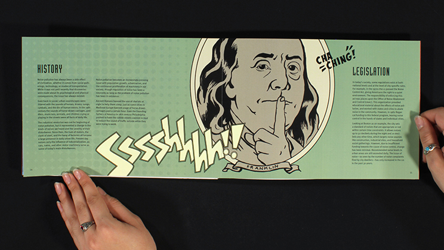
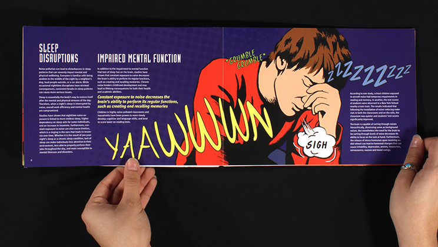
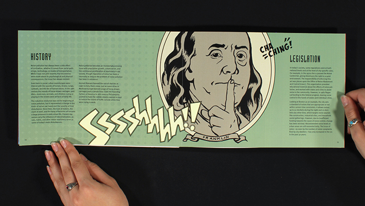
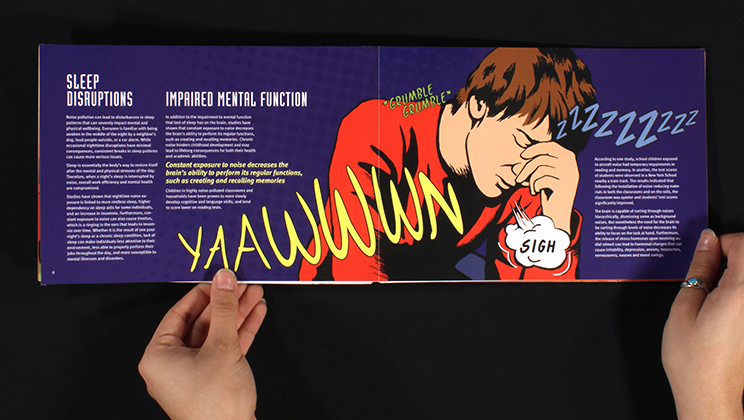
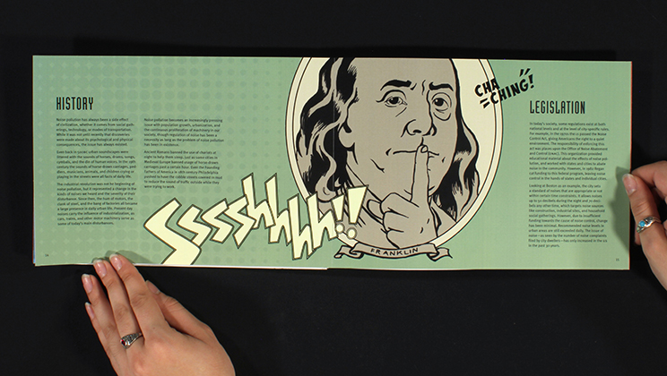

 





Noise Pollution Booklet
An informational booklet addressing the topic of noise pollution. The assignment was to create the content, imagery, and layout of a short booklet on a given topic. Inspired by comic book onomatopoeic typography as a means of visualizing sound, I adopted a similar comic-inspired illustration style and color palette.
A project for Graphic Design II at MassArt.